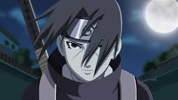

Madara Uchiha

Madara Uchiha (うちはマダラ, Uchiha Madara) foi o lendário líder do clã Uchiha durante a Era dos Estados Combatentes e um dos principais antagonistas da série. Ele fundou Konohagakure ao lado de seu rival, Hashirama Senju, com a intenção de iniciar uma era de paz. Eventualmente, quando os dois não concordaram quanto ao meio para alcançar a paz, eles lutaram pelo controle da aldeia em um combate histórico, que terminou com a morte de Madara. Contudo, Madara burlou sua própria morte e se escondeu, estendendo sua própria vida para trabalhar em seus planos para acabar com os conflitos mundiais. Incapaz de conclui-los em vida, Madara confiou seu conhecimento e planos a Obito Uchiha, pouco antes de morrer. Anos mais tarde, Madara foi reanimado e depois devidamente ressuscitado durante a Quarta Guerra Mundial Ninja. No entanto, os planos de Madara são definitivamente frustrados pelos esforços das Forças Aliadas Shinobi, e à beira de seus últimos momentos, ele percebe os erros de seu caminho e ateia as pazes com Hashirama antes de sua verdadeira e definitiva morte.
Itachi Uchiha
Itachi Uchiha (うちはイタチ, Uchiha Itachi) foi um dos membros mais poderosos do clã Uchiha e um dos principais antagonistas da série. Ele era conhecido por seu domínio sobre o Sharingan e por sua habilidade em manipular a realidade através de suas técnicas. Itachi era também um estudioso das artes ninja e tinha um profundo conhecimento sobre os segredos do clã Uchiha.
